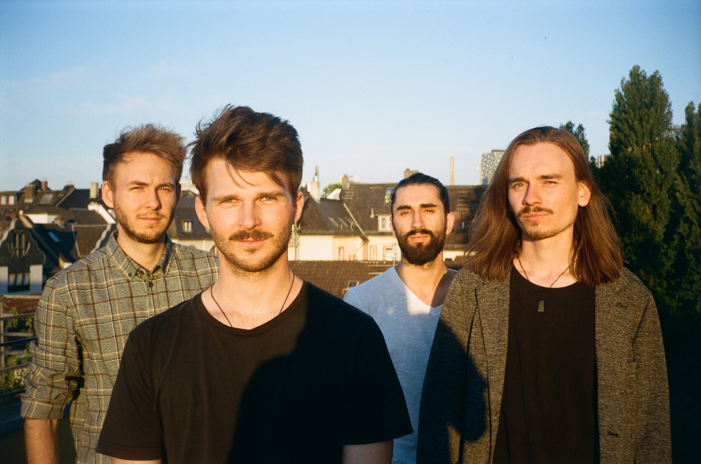

Wolfgang Stammer
PhD Student
Technical University Darmstadt
AI & ML lab
wolfgang dot stammer at cs dot tu minus darmstadt dot de
I am interested in
I believe the
Cool events I helped with:
- "Semantic, Symbolic and Interpretable Machine Learning" ELLIS Workshop at Elise Wrap Up Conference 2024
- "Interactive Machine Learning" Workshop at AAAI 2022
- "Explanations in Interactive Machine Learning" Tutorial at AAAI 2022
- "Perspectives on Learning" Doctoral Symposium on Cognitive Science of German Society for Cognitive Science, 2022
Apart from research I am very passionate about writing and playing music (see below :)).
Selected Publications
Show me in Google Scholar
Pix2code: Learning to compose neural visual concepts as programs
Antonia Wüst, Wolfgang Stammer, Quentin Delfosse, Devendra Singh Dhami, Kristian Kersting
[UAI 2024] (oral) [GitHub]Learning by Self-Explaining
Wolfgang Stammer, Felix Friedrich, David Steinmann, Hikaru Shindo, Kristian Kersting
[TMLR 2024] [GitHub]Learning to Intervene on Concept Bottlenecks
David Steinmann, Wolfgang Stammer, Felix Friedrich, Kristian Kersting
[ICML 2024] [GitHub]Interpretable Concept Bottlenecks to Align Reinforcement Learning Agents
Quentin Delfosse, Sebastian Sztwiertnia, Mark Rothermel, Wolfgang Stammer, Kristian Kersting
[arxiv 2024] [GitHub]Where is the Truth? The Risk of Getting Confounded in a Continual World
Florian Peter Busch, Roshni Kamath, Rupert Mitchell, Wolfgang Stammer, Kristian Kersting, Martin Mundt
[arxiv 2024]Revision Transformers: Instructing Language Models to Change Their Values
Felix Friedrich, Wolfgang Stammer, Patrick Schramowski, Kristian Kersting
[ECAI 2023]A typology for exploring the mitigation of shortcut behaviour
Felix Friedrich, Wolfgang Stammer, Patrick Schramowski, Kristian Kersting
[Nature Machine Intelligence 2023]Boosting Object Representation Learning via Motion and Object Continuity
Quentin Delfosse, Wolfgang Stammer, Thomas Rothenbacher, Dwarak Vittal, Kristian Kersting
[ECML-PKDD 2023] [GitHub]Leveraging explanations in interactive machine learning: An overview
Stefano Teso, Öznur Alkan, Wolfgang Stammer, Elizabeth Daly
[Frontiers in AI 2023]V-LoL: A Diagnostic Dataset for Visual Logical Learning
Lukas Helff, Wolfgang Stammer, Hikaru Shindo, Devendra Singh Dhami, Kristian Kersting
[arxiv 2023] [Project] [HuggingFace]Interactive Disentanglement: Learning Concepts by Interacting with their Prototype Representations
Wolfgang Stammer, Marius Memmel, Patrick Schramowski, Kristian Kersting
[CVPR 2022] [GitHub]Right for better reasons: Training differentiable models by constraining their influence functions
Xiaoting Shao, Arseny Skryagin, Wolfgang Stammer, Patrick Schramowski, Kristian Kersting
[AAAI 2021]Right for the Right Concept: Revising Neuro-Symbolic Concepts by Interacting With Their Explanations
Wolfgang Stammer, Patrick Schramowski, Kristian Kersting
[CVPR 2021] [GitHub]Making deep neural networks right for the right scientific reasons by interacting with their explanations
Patrick Schramowski, Wolfgang Stammer, Stefano Teso, Anna Brugger, Franziska Herbert, Xiaoting Shao, Hans-Georg Luigs, Anne-Katrin Mahlein, Kristian Kersting
[Nature Machine Intelligence 2020] [GitHub]Music
In addition to my work in AI and machine learning, I am also passionate about music. I play and write lyrics and music in the band Spiderwebs & Foam. Our band blends various genres, from Rock, Jazz, Electronic, Folk creating a unique sound that resonates with our thoughts :D. We have performed at several venues and continue to create and share our music with the world.